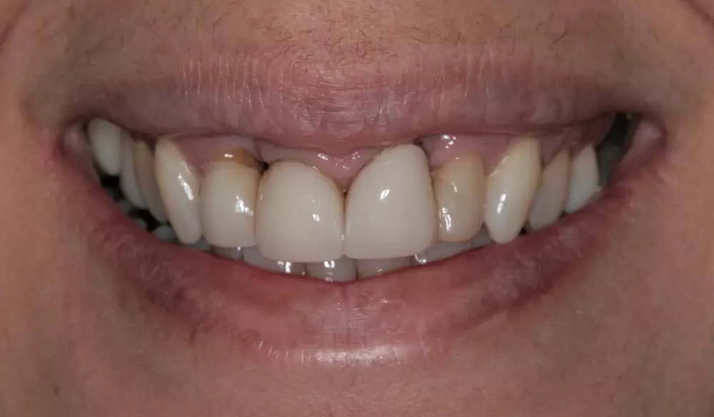

Seu sorriso merece o melhor cuidado!
Conheça o melhor tratamento para o seu sorriso. Sorria com confiança, sorria com a gente.
Tecnologia e carinho para cuidar do seu sorriso.
Você provavelmente pode estar enfrentando algum desses desafios:
- Sorriso comprometido: A falta de dentes tem afetado sua confiança e te impedido de sorrir livremente, seja em fotos ou ao encontrar outras pessoas.
- Dificuldades na alimentação: Está lutando para aproveitar suas refeições favoritas devido à dificuldade em mastigar alimentos de forma confortável e eficiente.
- Desconforto com próteses: Você está cansado de lidar com próteses que não se ajustam bem, causando dor e desconforto no dia a dia.
- Receio de tratamentos invasivos: O medo de procedimentos cirúrgicos está te afastando de buscar a solução ideal para o seu sorriso.
- Insatisfação com o sorriso atual: Você ainda não encontrou o sorriso que realmente representa quem você é, comprometendo sua autoestima e a forma como se apresenta ao mundo.
O motivo pelo qual você deve cuidar do seu sorriso:
A saúde do seu sorriso em boas mãos.
Veja o resultado dos meus pacientes:
Antes
Depois
Antes
Depois
Antes

Depois
CONHEÇA UM POUCO SOBRE MIM:
DR BRUNO MARTINS
- Cirurgião dentista formado pela Uesb e atuando como cirurgião dentista há 4 anos.
- Ótima relação com clientes e reconhecimento pelo ótimo atendimento.
- Responsável por realizar sonhos. Estou em constantemente aprimorando das minhas habilidades, investindo em especializações, incorporando novas tecnologias e materiais de qualidade para oferecer o melhor atendimento possível.
Localização:
Endereço: Rua Centro, Jequié - BA
Telefone: (12) 34567-890